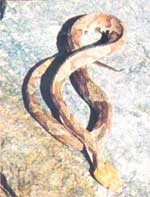
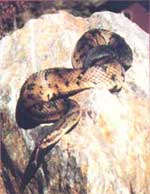
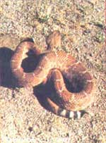
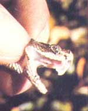
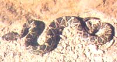
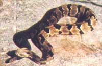
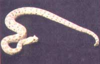
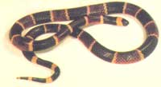
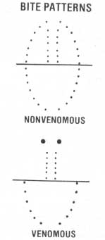

Prevention's the best medicine, but you should know what to do-and NOT to do-in case of. . .
NOTHERN COPPERHEAD
EASTERN COTTONMOUTH
CLOSE-UP OR RATTLESNAKE SHOWING ERECT FANGS. HEAT-SENSITIVE PIT
EASTERN DIAMONDBACK
TIMBER RATTLESNAKE
SIDEWINDER
EASTERN CORAL SNAKE
This article was adapted, by MOTHER'S staff, from the work of Lester E. Harris, Jr., who is the author of a Brief Guide to Snakebite (Preston Publications).
Few creatures are as universally feared as poisonous serpents, but the fact is that snakebite is a far cry from the "certain death" that many people consider it to be. To begin with, the chances of being bitten by any snake-venomous or not-are slim.
Unfortunately, the only available statistics on the effects of venomous snakebite are nearly 20 years old and thus outdated, but if the ratio recorded then still holds true, only one bite in 3,000 is likely to be fatal, while some 10% to 20% produce no effect whatsoever, even if the snake's fangs do penetrate the skin! Fatalities occur most often when elderly people, individuals who are ill, or small children are bitten ... or when a person who is struck receives no treatment. Authorities estimate that-in the U.S.-there are no more than 12 to 15 deaths from snakebite per year at present.
KNOW YOUR NEIGHBORS
The best way to deal with snakebite is, of course, to avoid getting bitten in the first place. And perhaps the best way to do that is to know the various serpents and recognize their preferred habitats.
Of the four venomous snake types in the U.S., three-the various water moccasins, copperheads, and rattlesnakes-are pit vipers and share some common characteristics. All have [a] a pit-or hole-between the eye and nostril, which is heat-sensitive and helps the snake locate prey (these reptiles are also very responsive to vibrations, but can't actually "hear"), [b] vertical pupils in their eyes, [c] wedge-shaped heads that are wider than their necks, and [d] hinged poison fangs that lie flat against the roof of the mouth when the jaws are closed, then snap forward and erect when the mouth is opened. In addition, all three have a venom that's destructive to blood and tissue and produces symptoms within a few minutes after being injected.
The most common pit viper in the United States, and the poisonous snake responsible for the greatest number of bites, is the rattlesnake . There are approximately 20 species and subspecies of rattlers: Some are light, some dark, some marked with diamonds, while others are blotched or banded . . . but all may be recognized by the horny string of interlocking, loosely fitted rattles at the end of the tail. When vibrated rapidly, these rattles produce a distinctive buzzing sound, but-contrary to legend-the snake may or may not choose to vibrate its tail when disturbed. Chief among this group of reptiles are the eastern and western diamondbacks, which are large and capable of injecting a sizable amount of poison with one bite.
The copperhead is, by some standards, a rather handsome snake . . . and the only one in the U.S. whose hourglass markings are positioned with the constricted portion of the design down the midline of its back, as though someone had bent the hourglass across its spine and down on either side. The color can vary from almost pink to dark chestnut brown, with only some specimens having the bright copper-colored head that gives the species its common name.
The cottonmouth , or water moccasin , is a heavy-bodied snake with a reputation for bad temper. It's difficult to identify quickly because its markings tend to become indistinct with age. Besides having the usual pit viper characteristics, the cottonmouth has a broad, dark band extending from the nostril through the eye to the angle of the jaw on either side of the head. The interior of the mouth has a white "cottony" lining that's visible when the snake gapes threateningly at an intruder. Unlike other water snakes, the cottonmouth swims with its head well above the surface, but it can bite just as easily under the water as out of it.
The coral snake (which is the fourth poisonous type in the United States, and the only one that's not a pit viper) is easily seen . . . but just as easily misidentified. There are, you see, at least three other serpents with similar markings-the scarlet snake, the organpipe shovel-nosed snake, and the milk snake-all of which are harmless. The venomous species is slender and black-nosed, with bands of red bordered in yellow and black strips between the red and yellow circlets. Although the old rhyme doesn't tell the whole story, "red and yellow kill a fellow . . . red and black venom lack" can be a useful adage.
Coral snakes are related to the kraits and cobras of Asia and have a highly virulent neurotoxic venom that may not produce symptoms for several hours ... by which time it may be more difficult to treat the victim. Unlike the pit vipers, these reptiles have poison fangs that are fixed, rather than hinged, in the jaw. The fangs are smaller than those of pit vipers, too, and coral snakes must chew in order to inject their poison. Fortunately, they are typically un-aggressive and relatively uncommon. ("The chances of being struck by lightning are probably 20 times greater than those of being struck by a coral snake," declares one eminent authority.) Nevertheless, to be on the safe side, it's best to give any brightly banded serpent a wide berth.
Regardless of which of the four venomous snake types may live in your area, it's important to keep in mind that woods and meadows, or even tumbledown buildings, could well be "home" to poisonous serpents. At one time the reptiles were typically found in areas of low population density . . . but that's no longer always the case. Rapidly expanding suburbs have usurped some of their old territory, crowding the creatures into larger groups . . . sometimes in small, often recreational, patches of land surrounded by houses. And snakes whose natural inclination is to live on rock ledges and in mountainside scree slopes may find similar refuges in building foundations.
READ A BITE SIGNATURE
Sometimes the only way to accurately determine whether a bite is that of a poisonous snake is by examining the pattern of the tooth marks, so it's best to learn what to look for before you need that knowledge. Harmless serpents usually have four rows of teeth in the upper jaw and two rows in the lower . . . while venomous types lack the two outside rows in the upper jaw and have, instead, two large poison fangs in the front of the mouth. The accompanying sketch illustrates a full tooth print of each variety, but in an actual bite only a portion of the print is likely to show. If a poisonous snake has bitten someone, however, one or both fang marks will almost always be visible, as will perhaps a few of the smaller teeth.
Incidentally, the bite may be quite bloody even though the tooth punctures are minute: Snake saliva contains an anticoagulant, which causes the blood to flow freely for some minutes after a bite. (This actually cleanses the wound of bacteria and reduces the likelihood of infection.) Rinse the blood off with water to see the bite pattern, but do not use kerosene, alcohol, or any other such liquids , as they can compound the problems that the bite itself may cause.
SAFETY FIRST
Another aspect of snakebite prevention lies in taking precautions when traveling through known serpent habitat. If at all possible, follow these rules:
[1] Before going out in the field, find out the name, address, and phone number of a physician competent in the treatment of snakebite (remember that not all doctors are equally familiar with these procedures).
[2] Don't travel alone in snake country. The usual rule is to stay in groups of no less than three. If one person is hurt, the second can stay to care for the victim while the third goes for help.
[3] Wear proper clothing. Don't select shorts or tight jeans . . . baggy pants are definitely safer than snug ones (after all, it's better to have a striking snake get a mouthful of britches than a bite of you). And although hiking shoes do provide some protection, high boots are better. The latter may be uncomfortably hot in the summertime, but they're a must in areas that are known to be heavily infested.
[4] Always be aware of where you're putting your hands and feet. Never reach up and over a ledge when climbing ... if you can't see the surface, you can't be sure it's unoccupied. And don't sit down on a log or the ground without checking the area carefully, or step completely over a log in the path . . . instead, step on top of it first. Not even a snake likes to have a foot planted on its spine, and it may express dissatisfaction by sinking its fangs into your leg.
[5] Be sure that you're familiar with the basic first aid procedure for snakebite before you need it.
GOTCHA!
Of course, regardless of how careful you are, there's always a slim chance that you'll be bitten. Therefore, you ought to know what to do if the unlikely should happen.
The first thing to do is keep calm. Naturally, that's more easily said than done, and it will probably take all your will power to accomplish it in the face of the shock and fright a bite will cause, but it's vitally important. Increased activity and fear make the heart beat faster, speeding the venom-if any has indeed been injected-through your system.
Second, if you can see that the striking snake is one of a venomous variety, or if you really aren't sure, kill it-be certain it's dead-and take it with you to the hospital. A physician who knows the size and species of serpent involved can administer the correct kind and amount of antivenin.
Third, check the bite pattern. If you find fang marks (or can't be sure there aren't any), apply some kind of constricting band -such as a shoelace, bandanna, fishline, or whatever you can find-between the bite and the heart. Place it close to the bitten area if you're doing so immediately after being struck . This will serve to localize the venom as much as possible: The body can actually detoxify a certain amount of foreign material if it can be allowed to leak slowly to the vital areas. The tourniquet should be just tight enough to allow the insertion of two fingers between the bandage and the body . . . and it should be left on, without loosening, for up to an hour or even an hour and a half.
Fourth, if you've identified the snake or the bite as venomous (or, again, if you're not sure) get to a doctor as soon as possible . In general, bad bites will produce symptoms within minutes. These signs include swelling, purpling, and a painful burning sensation . . . but remember that coral snake bites, which may not show clear symptoms for several hours, must also be treated quickly.
BUT HOW QUICK IS QUICKLY?
There's considerable controversy over the treatment of venomous snakebites, much of which is caused by the fact that a great number of variables can affect the bite's severity. Among these are the age and body size of the victim, the species and size of the snake, the time of year, the section of the snake's geographical range where the strike occurred, the number of bites, their location, the depth of fang penetration, the length of time the snake held on, the amount of venom injected, the sensitivity of the victim to the venom, the kinds of bacteria in the snake's mouth, the condition and disposition of the snake at the time, and the effectiveness and type of first aid treatment.
At least one widely respected authority believes that any venomous snakebite must be treated within 30 minutes for the victim to be relatively sure of recovery. Another feels that a person can usually stand a delay -if necessary-of two to four hours before risking serious consequences. All agree that the victim should be taken to a doctor or a hospital as rapidly as possible so that antivenin can be administered.
A BIT ABOUT ANTIVENIN
There are two kinds of snake antivenin commonly available-to doctors, or through prescription only-in the United States. Both are manufactured by the Wyeth Laboratory in Philadelphia, both are very expensive, and both can be dangerous in the hands of a nonprofessional. "Antivenin (Crotalidae) Polyvalent" is effective in the treatment of all kinds of pit viper bites, including those of the fer-de-lance and formidable bushmaster of South America. "Antivenin ( Micrurus fulvius )" is used for the bites of the eastern and Texas coral snakes. If authorities disagree on some aspects of snakebite treatment, they are all in accord when it comes to the matter of antivenin: It is not for use by a layperson.
Antivenin is a chemical counterbalance to the powerful toxins in snake poison. It is prepared from the blood of a horse as a dehydrated serum product, and there's the possibility that a given individual may be allergic to horse serum . . . perhaps as a result of previous tetanus inoculations, which are also prepared from that material. Such a man or woman could experience a fatal reaction upon being treated. In very severe cases of snakebite a physician may elect to use the serum in spite of a victim's positive reaction to a sensitivity test, but would then be prepared to treat the allergy symptoms as they developed . . . using all of the medical equipment at his or her disposal.
The amount of antivenin needed will vary from case to case. It's packaged in 10-cc. vials, and anywhere from 5 to 30 vials (in rare cases even more) are used to treat the bite of a diamondback rattlesnake, while a coral snake bite requires at least 3. Administration of the serum is a complicated procedure involving several steps . . . and a great deal of care.
Medical attention is also needed for the aftereffects of a bite. These may include considerable tissue destruction, and a doctor will have to remove this dead flesh within a week or so. In the meantime a broad-spectrum antibiotic is usually given to prevent serious infection. Active exercise of the bitten part, as it begins to heal, can help prevent deformation.
Obviously, in view of both the dangers and expense involved in treatment [EDITOR'S NOTE: As of this writing, the prices of antivenin at our local pharmacy in Hender-sonville are as follows: pit viper antivenin, $40/vial, coral snake antivenin, $60/vial] , it's clear that snakebite prevention is of the greatest importance!
A RUNDOWN ON THE DO NOTS
Finally, you should know specifically what to avoid doing if you're bitten. Here are a few of the most important don'ts:
First, do not make an incision and attempt suction of the wound. This once-recommended treatment often results in cut nerves, tendons, and blood vessels with attendant infection . . . and does little good in removing the poison.
Second, do not put the bitten limb in ice or use any form of cooling. This procedure, which was formerly thought to retard the spread of venom, has been responsible for the permanent deformation or amputation of many arms and legs.
Third, do not eat or drink prior to treatment, since doing so tends to speed up the body's circulation.
Fourth, and perhaps most important of all, do not assume the worst! The curator of reptiles in one of our finest zoos believes that possibly 50% of all venomous snakebites actually have no toxic effect. He speaks from experience: Bitten three times by various pit vipers, he has had a reaction only once (and that, incidentally, resulted from the bite of a cottonmouth that was "safely" impounded in a heavy canvas catch bag). "If it's a serious strike, you'll know within a few minutes," he says. "And," adds a pharmacist, "remember that there's scarcely a place in the country where you can't get to a doctor in plenty of time."
So, follow the first aid procedures recommended here . . . and keep calm.
USE COMMON SENSE
The quotation "the only thing we have to fear is fear itself" may well be relevant to our dealing with snakes. Poisonous serpents are fellow passengers on this old planet and should be treated with respect and understanding. By using our intelligence and employing a reasonable amount of caution, there's no reason we shouldn't be able to enjoy encounters with our remarkable neighbors-bringing back, perhaps, memorable photographs-without getting hurt.
|
 |
 |
 |
|
 |
 |
 |
|
 |
 |
 |